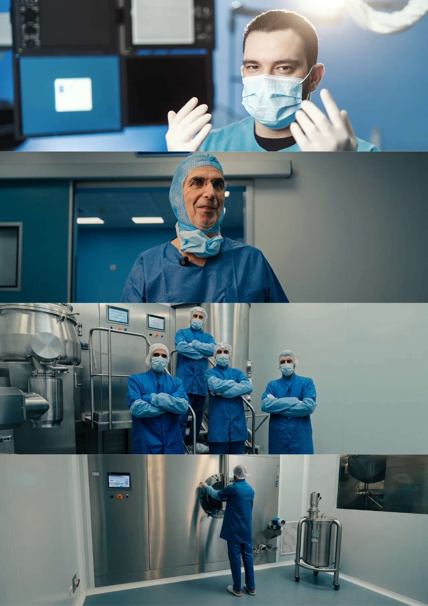

About
DJARRI Design Studio —
identity, packaging and film.
A design studio for pharmaceutical, parapharmaceutical, skincare and consumer-health brands. Since 2017, in markets where a design decision has to answer to a regulator as well as to a shelf.
What nine years actually taught.
Regulated categories are unforgiving in a specific way: the constraints arrive before the brief does. Mandatory information, dosage hierarchy, substrate, print tolerance and a shelf where eleven of your own products compete with each other — all of it fixed before a single decision about how the thing should look.
Working inside that changes what a studio thinks design is for. The deliverable stops being an artwork and becomes a set of rules: the ones that still hold when the catalogue doubles, the sales team improvises a flyer, and the studio is no longer in the room.
Three of those systems are documented in full as case studies. All three are still in use.
The studio
- StudioDJARRI Design Studio · since 2017
- PracticeBrand identity · Packaging · Campaigns · Film
- FilmIn-house: brand films, product films, social reels and motion
- Record9+ years · 100+ products on shelves · 30+ brand identities · 100+ client projects
- SectorsPharmaceutical · Parapharmaceutical · Dermo-cosmetic · Consumer health
- LanguagesArabic · French · English
Film
A film department inside the studio.
Film is made in-house, by the same studio that drew the pack: brand films, product films, social reels and motion work, directed, shot and cut under one roof.
The Evolab launch film was shot on the laboratory’s own production line — the brand shown where the product is made. A brand that lives on a carton, a catalogue, a stand and a screen needs one studio that can hold all four at once.

Founder
Abdeldjalil Djarri, founder and creative director.
He founded the studio in 2017, under its former name WEKOM, while still finishing a master’s in software engineering. That is why ranges are built here the way software is: with inheritance, edge cases, and the thirty-first product already accounted for.
Alongside the studio, he directs the filmmaking department at Revolution Agency, helping the agency raise the standard of its own work and its clients'. That role is his, separate from the studio: the studio's films are made at the studio.
- EducationMaster's degree, Software Engineering — University of Constantine 2, 2018
- LeadershipDirector of the filmmaking department, Revolution Agency
Kind words
One passage, set large, about how the collaboration actually ran.
Contact
The work starts before anything is drawn.
Identity and packaging commissions in regulated health categories. A message describing the range and where it is going is the fastest way in.